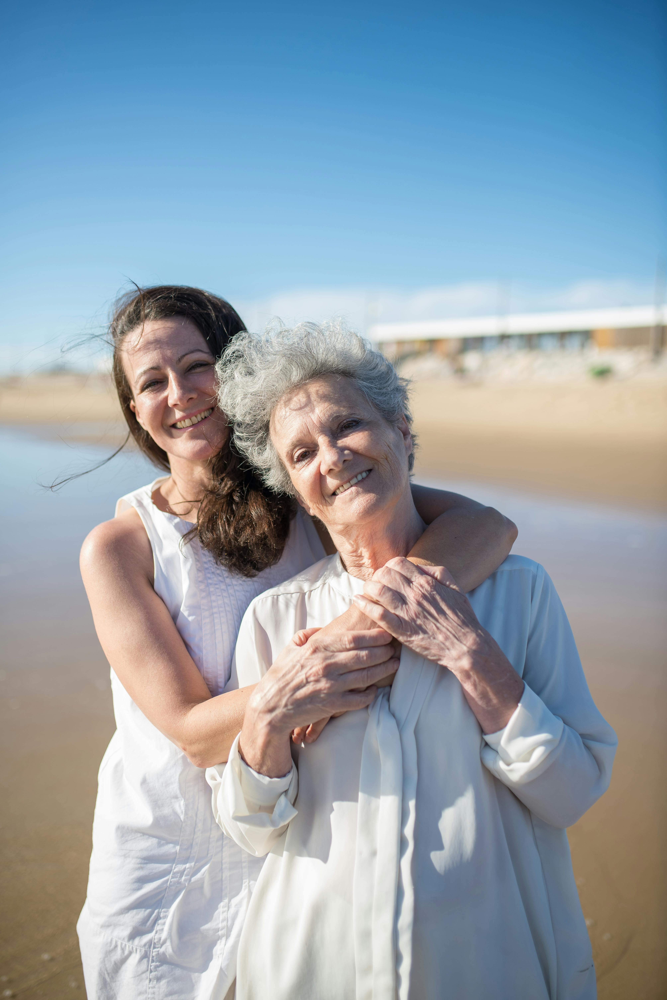
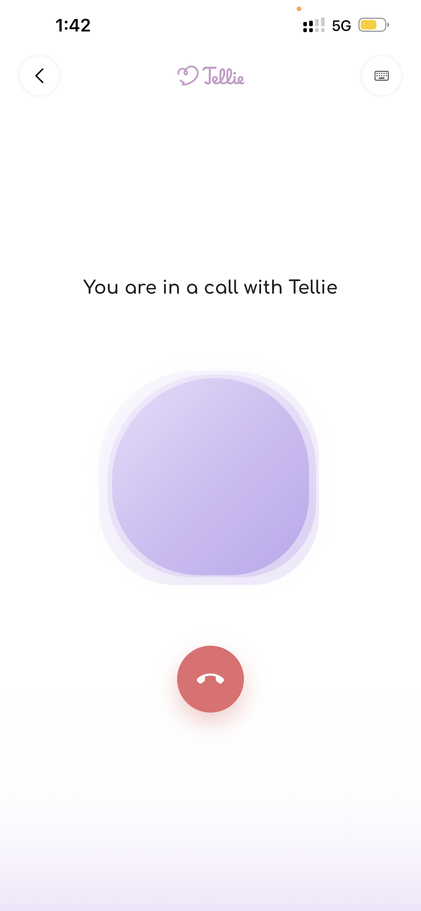
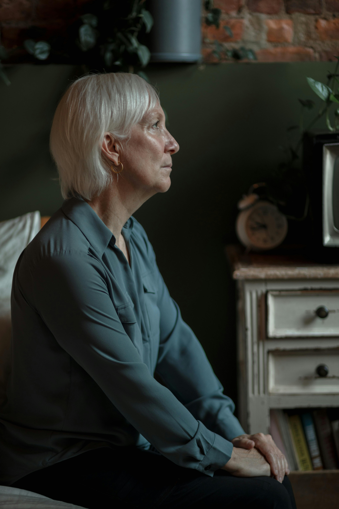
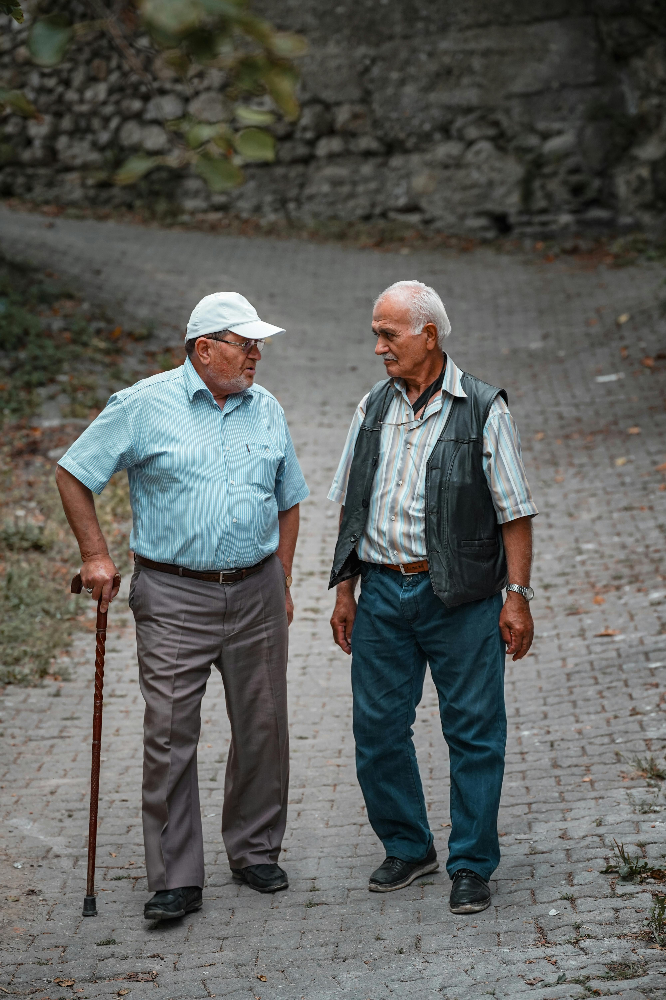
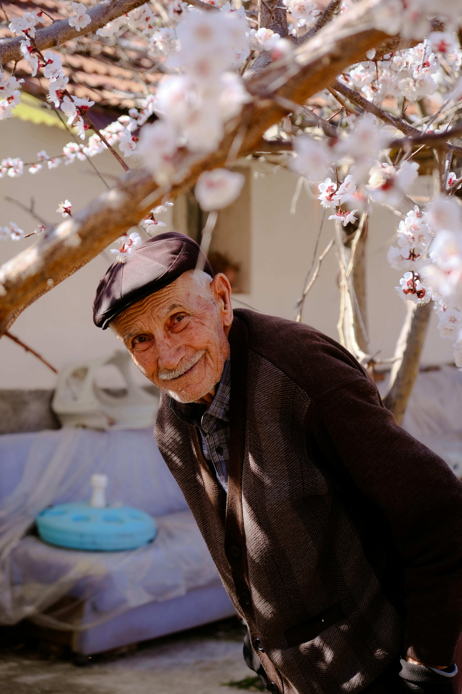

The wedge
Companionship is the entry point into a much larger digital-inclusion, family reassurance, and healthy-aging opportunity.
Tellie Investor Story
This experience presents Tellie's business plan as a horizontal story designed for investors, strategic partners, and potential co-founders.
Voice narration is prepared as the next step.
Tellie investor story
For the intended experience, open this story on a tablet, laptop, or desktop. You can still download the full Tellie business plan below.
Tellie business plan
Tellie is building an empathetic technology platform for older adults, beginning with a voice-first companion and expanding into a broader digital-inclusion and healthy-aging company.
Start with the elders of today. Win trust through what already feels familiar. Earn the right to grow into the relationship layer families and future generations already know.
Companionship is the entry point into a much larger digital-inclusion, family reassurance, and healthy-aging opportunity.
Population aging is becoming structural, durable, and economically impossible to ignore.
Use mobile to win trust now, then extend that trust into families, institutions, and future form factors including robotics.

Tellie brings familiarity, calm, and continuity to older adults and the families who worry about them.


Everything begins with the emotional gap between being connected in theory and feeling supported in practice.
The problem
Loneliness collides with digital exclusion, shrinking confidence, and a world that keeps moving faster. Families are more geographically distributed, interfaces are more complex, and many seniors are left feeling marginal to the very technology that is supposed to keep them connected.
Social disconnection is increasingly linked to significant mental and physical health outcomes, which makes this problem deeply human and economically costly.
When products assume speed, confidence, and digital fluency, many older adults experience a loss of confidence, autonomy, and the feeling that modern life includes them.
Tellie treats companionship as the wedge, and digital inclusion as the larger company opportunity.
Why now
Developed economies are moving from youth-heavy population structures to older, top-heavy ones. At the same time, everyday life is becoming more digital, more automated, and more demanding for people who grew up in a different technological era. That creates a durable gap between how the world works and how many older adults are able to comfortably participate in it.
Tellie is being built into one of the largest and most predictable demographic transitions underway across developed economies.
Americans were aged 65+ in 2024, already representing one of the world’s largest aging populations.
projected share of the population aged 65+ by 2066.
This is a demographic and behavioral transition that will shape care, connection, and technology for decades.
Why mobile first
For the next 10 to 15 years, large waves of older adults will still be entering later life with lower digital confidence than the generations that follow them. Tellie meets them through something they already trust: the phone.
We asked adults aged 60+ what they could do most confidently on their phone. The answer was simple: make a phone call. That insight shaped Tellie. First mobile. Then voice-first. Then call-shaped. Familiarity became the product strategy.
The product
Tellie begins with one simple product question: what can an older adult already do comfortably? The answer is call. So Tellie is built around a familiar behavior. Behind that simple interaction is an orchestration layer that combines voice, memory, context, and senior-first interaction design.
Older adults often want to tell their stories. Tellie was built to remember them, return to them, and make memory feel like respect, continuity, and care.

Founder and traction
Tellie moved forward through execution. The product was built first, reducing technical risk and focusing the company on the next questions: how to acquire, retain, and scale trust.
Tellie progressed to a live mobile product with voice, chat, subscriptions, memory, and activation flows before outside capital.
A large Latin American health insurer explored a preventive-health protocol with an initial 10,000-user pathway and a longer-term 1.4M rollout opportunity.
The opportunity ended because the insurer entered an M&A process and priorities shifted. Tellie carried that learning forward into its broader platform thesis.
Market opportunity
Tellie begins in Australia because it is English-speaking, digitally connected, and already experiencing strong aging-population pressure. The United States becomes the major scale market because of its size, purchasing power, and much larger 65+ population base.
| Market | 65+ basis | Directional TAM |
|---|---|---|
| Australia | ~4.4M | USD $450M-$1.1B |
| United States | ~56M to 61.2M | USD $6B-$14B |
| United Kingdom | ~12M | USD $1.5B-$3B |
| Canada | ~7M | USD $800M-$2B |
| New Zealand | ~0.9M | USD $100M-$250M |

Revenue model
Tellie is designed as a hybrid business. Consumer subscriptions help prove product-market fit and family willingness to pay. Institutional distribution through trusted organizations can compress go-to-market time, lower acquisition friction, and scale revenue faster once the product is trusted.
Today, the pricing story is simple: consumer subscriptions create the first revenue layer, while institutional pricing is structured through pilots, seats, or facility packages. Over time, the mix shifts from mostly B2C validation to stronger B2B scale.
Freemium access supported by paid consumer plans for older adults and adult children.
Free, $12.99/mo, $29.99/moCommunity programs, councils, home care providers, and aged-care facilities.
Seat, facility, or bundle pricingFree tier supports trial and habit formation. Starter is designed for moderate recurring use. Premium is designed for heavier engagement and richer future features.
Institutional pricing is validated through pilots and can be structured per seat, per facility, or through program bundles depending on the partner and deployment model.
Consumer pricing proves willingness to pay. Institutional pricing creates the path to faster distribution and stronger long-term revenue.

Go-to-market and marketing
The right sequence is community-first, family-second, and institutional expansion once product trust and retention are visible.
Tellie grows by building trust first, then expanding through the channels that naturally compound trust.
Financial engine and KPIs
Tellie’s model depends on usage governance, tiering, disciplined AI cost management, and an institutional mix that improves margins over time.
The thesis
Start with the current generation of older adults, who still need simplicity and trust more than novelty. Build around the phone, and then around the phone call. Prove companionship, retention, and family confidence. Expand into institutions, richer care contexts, and eventually future form factors including robotics. That is the business plan.